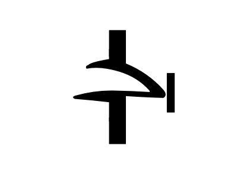

*
*ᠮᠠᠨᠵᡠ ᡥᡝᡵᡤᡝᠨ縦書き
原則としてメレンドルフ式のラテン文字転写に従いますが、 ū は v や U として、 š は x や S としても入力可能です。また、属格の ᡳは I として、直前の語との間にスペースを入れずに入力してください。漢語を表記する文字は次のように入力してください：
|
|
 | |
* |
* | ||||||
| メレンドルフ式 | kʽ | gʽ | hʽ | tsʽ | ts | dz | ž | sy | cʽy | jy | （音節境界） |
| 入力文字 | K | G | H | ts | tsy | dz | z, R | sy | cy | jy | ' |
* それぞれ「C」「J」から子音字を単独で入力できます。
Noto Sans Mongolianを使用しています。ただし、端末にXM_ZhengBai（画像に使用）がダウンロードされている場合はそちらが優先されます。